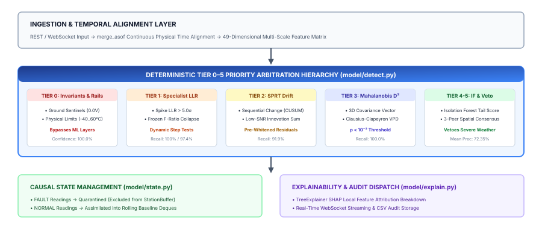
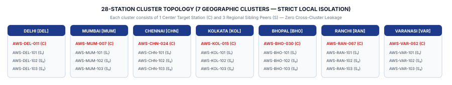
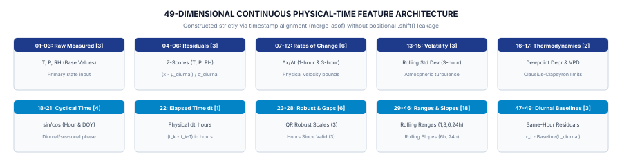
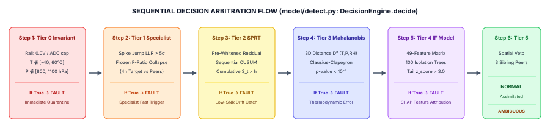
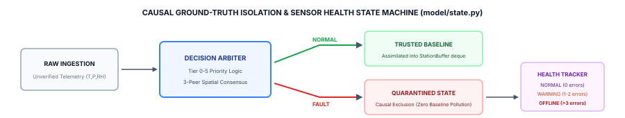

This engineering specification details the system architecture and mathematical implementation of SkyGuard AI. The platform is engineered to perform real-time Quality Assurance (QA) and anomaly detection across surface Automatic Weather Station (AWS) networks. SkyGuard integrates a deterministic Tier 0–5 Priority Arbitration Hierarchy, continuous physical-time feature extraction without row-shift leakage, causal ground-truth state isolation, and cluster-isolated spatial consensus.
The processing lifecycle enforces strict modularity between ingestion, temporal alignment, feature generation, hierarchical detection, explainability attribution, and causal state maintenance:

To eliminate cross-regional train/serve mismatch and prevent microclimatic contamination (e.g., coastal marine boundaries vs. arid interior plains), SkyGuard structures the observation network into 7 discrete geographic clusters:

The feature engineering engine (model/features.py) strictly avoids positional row shifts (.shift(n)), utilizing exact physical timestamps and pd.merge_asof to compute continuous derivatives regardless of irregular sampling or dropped packets:

| Feature Range | Category | Mathematical Formulation | Diagnostic Purpose |
|---|---|---|---|
| 01 – 03 | Raw Telemetry Channels | xt = [Tt, Pt, RHt] | Base atmospheric observation state. |
| 04 – 06 | Innovation Residuals | zt = (xt − μdiurnal) / σdiurnal | Normalized deviation from local expectation. |
| 07 – 12 | Rate-of-Change Velocities | Δx/Δt = (xt − xt−Δt) / Δthours (1h, 3h) | Captures sudden atmospheric jumps vs. spikes. |
| 13 – 15 | Short-Term Volatility | σ3h(x) = [ (1/N) ∑(xi − x̄)2 ]0.5 | Identifies turbulence vs. abnormal stillness. |
| 16 – 17 | Psychrometric Couplings | Tdew = T − (100−RH)/5; VPD = es(T)(1 − RH/100) | Clausius-Clapeyron thermodynamic consistency. |
| 18 – 21 | Cyclical Time Encodings | sin/cos(2π·Hour/24), sin/cos(2π·DOY/365) | Diurnal and seasonal cyclical phase alignment. |
| 22 | Elapsed Physical Interval | Δthours = (tk − tk−1) / 3600.0 | Exact physical elapsed time tracking. |
| 23 – 25 | Robust Statistical Scales | Scalerobust = (xt − median) / IQR | Outlier-resistant localized baseline scaling. |
| 26 – 28 | Sensor Gap Tracking | Δtvalid = Hours since last trusted observation | Tracks quarantined sensor downtime duration. |
| 29 – 46 | Rolling Ranges & Slopes | RangeW = maxW(x) − minW(x); SlopeW = Cov(t,x)/Var(t) | Multi-scale dispersion (1,3,6,24h) & synoptic trend. |
| 47 – 49 | Diurnal Residual Baselines | rdiurnal = xt − Baseline(hdiurnal) | Hour-of-day baseline residual tracking. |
DecisionEngine.decide (model/detect.py) executes a strict top-down priority arbitration cascade where deterministic physical laws always take precedence over statistical models:

FAULT (CRITICAL) and bypass all downstream computation.NORMAL.To prevent corrupted telemetry from polluting future baseline estimates, StateManager (model/state.py) enforces strict ground-truth isolation:

FAULT (or when a sensor is in OFFLINE health state), the observation is strictly quarantined. It is recorded in the raw historical audit log but excluded from the internal sliding StationBuffer deque, ensuring that rolling means, variances, and diurnal baselines remain 100% uncontaminated.
SkyGuard's capabilities map directly to concrete meteorological and field operations:
StationBuffer causal exclusion, preventing bad data from contaminating forecast model initialization.| Subsystem | Current Implemented Architecture | Demonstrated Status | Future Scope |
|---|---|---|---|
| Inference Engine | Vectorized NumPy / Scikit-Learn on CPU | DEMONSTRATED | C-optimized firmware (ESP32) |
| Temporal State Buffer | In-memory circular deques (collections.deque) |
DEMONSTRATED | Distributed Redis state cache |
| Storage Layer | Flat-file CSV streaming (HistoryStore) |
DEMONSTRATED | TimescaleDB / PostgreSQL cluster |
| Spatial Discovery | Static 7-cluster topology (4 stations/cluster) | DEMONSTRATED | Dynamic PostGIS radius queries |
| API & Streaming | FastAPI REST endpoints + WebSockets | DEMONSTRATED | gRPC streaming gateway |